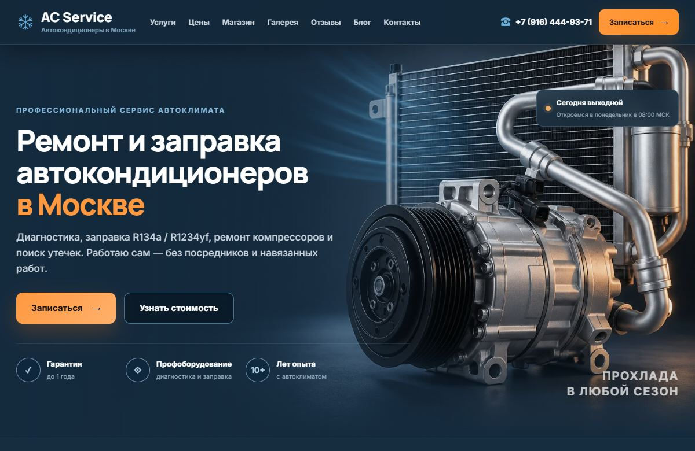
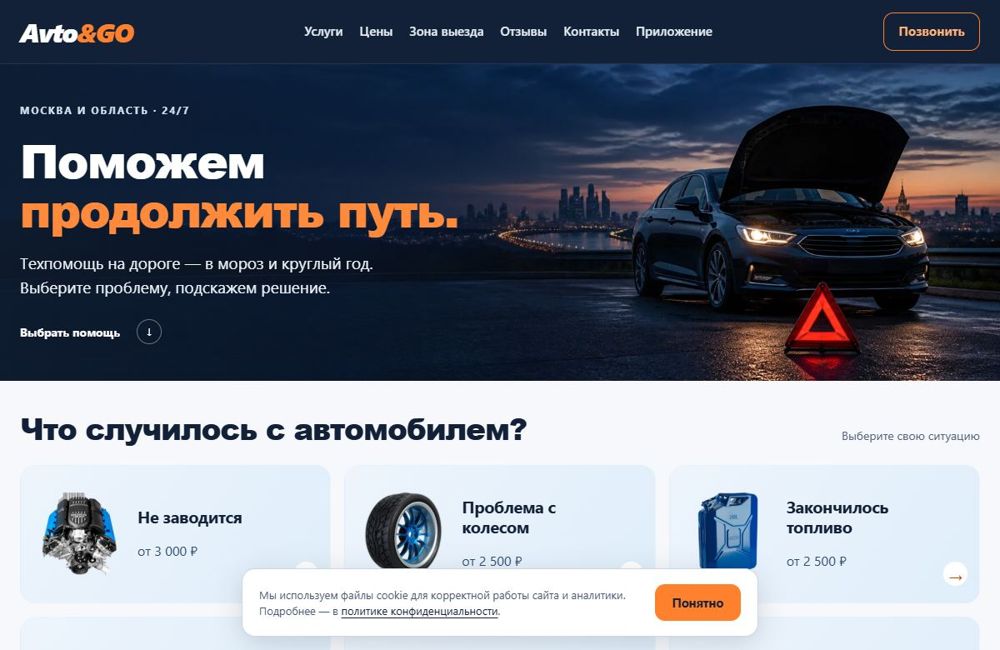
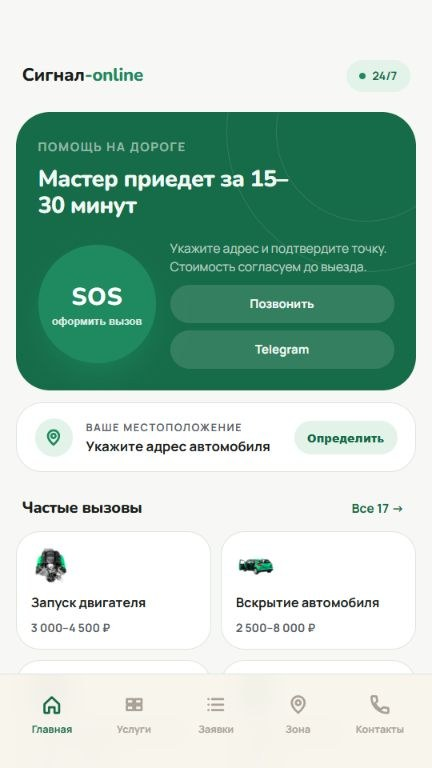
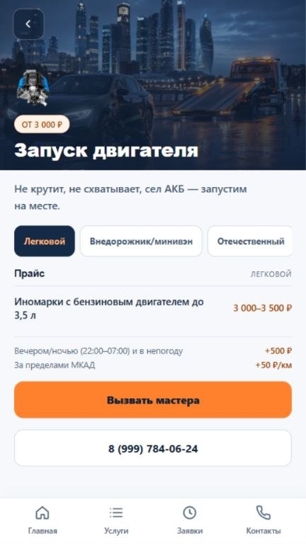

Избранные работы / 01–07
Сайты и приложения для Android
Занимаюсь сайтами для бизнеса и приложениями для Android. Здесь собраны проекты с каталогами услуг, формами заявок, калькулятором доставки и мобильными интерфейсами.
Обо мне
В работе над сайтом или приложением начинаю с вопросов посетителя. Где найти нужную услугу? Как рассчитать стоимость? Как обратиться за помощью? В кейсах показано, как эти задачи решены в разных проектах.
Проекты
01–0701 / Сайты
01AC Service
Сервис автокондиционеров. От диагностики до подбора компрессора.

Сигнал Онлайн
Выездная автотехпомощь. Заявка с адресом или точкой на карте.

Fuel&Go
Доставка топлива. Расчёт стоимости по топливу и объёму.

Avto&GO
Техпомощь на дороге. Выбор помощи по ситуации на дороге.

02 / Android-приложения
05Сигнал Онлайн
Приложение выездной техпомощи. Выбор услуги, адрес и заявка диспетчеру.

Avto&GO
Приложение дорожной техпомощи. Каталог, звонок и заявка на выезд.

Рыболовный справочник
Будущее приложение для Android. Справочник озёр и поиск по водоёмам.